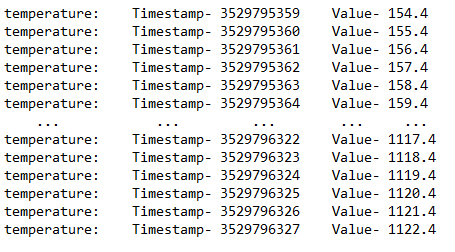

3.1. Time Series Storage API¶
The following C example demonstrates the use of ITTIA DB IoT by ingesting 1,000 values into a time series in a persistent storage, then reading the values stored between two timestamps.
#include <ittia/db/db_iot_storage.h>
#define kMaxReadCount 100
/* Create timestamp to ingest data at */
db_timestamp_t kStartTime = { { { 2020, 12, 1 }, { 0, 1, 0 } }, 0 };
db_timestamp_usec_t sample_time_usec;
db_timestamp_to_usec(&sample_time_usec, kStartTime);
/* Initialize ITTIA IoT environment */
(void)db_init_ex(DB_API_VER, NULL);
/* Create & connect to DB IoT storage */
db_t db;
db_time_series_t series;
(void)db_open_iot_file_storage("example.ittiadb", NULL, DB_OPEN_OR_CREATE, DB_DEF_PAGE_SIZE, NULL, 128*1024);
(void)db_connect(&db, "example.ittiadb", NULL, NULL, NULL);
(void)db_open_time_series(&series, db, "temperature", DB_COLTYPE_FLOAT32);
/* Ingest time series into storage */
db_float32_t value = 123.4;
for(int i = 0; i < kMaxReadCount*10; i++){
(void)db_time_series_put_float32(series, sample_time_usec++, value++);
}
/* Define a start(optional) and stop time(optional) for a time-series query */
dbstatus_t value_count;
db_timestamp_t kStopTime = { { { 2020, 12, 1 }, { 0, 2, 0 } }, 0 };
db_timestamp_usec_t begin_time, end_time;
db_timestamp_to_usec(&begin_time, kStartTime);
db_timestamp_to_usec(&end_time, kStopTime);
/* Query a time series */
do {
db_timestamp_usec_t timestamp_array[kMaxReadCount];
db_float32_t value_array[kMaxReadCount];
db_timestamp_usec_t next_begin_time;
value_count = db_query_time_series_range_float32(series, begin_time, end_time,
timestamp_array, value_array, kMaxReadCount, &next_begin_time);
for (int i = 0; i < value_count; ++i) {
printf("temperature: \tTimestamp- %u\t Value- %g\n", timestamp_array[i], value_array[i]);
}
begin_time = next_begin_time;
} while (value_count == kMaxReadCount);
/* Clean up all resources */
(void)db_close_time_series(series);
(void)db_disconnect(db);
(void)db_close_storage("example.ittiadb");
Warning
To aid legibility, this example does not handle errors. We strongly recommend checking the return value of all ITTIA C API functions.
The output of the code is shown below.
{kind=link}
If you’d like to learn more, please refer to Time Series Storage C API.